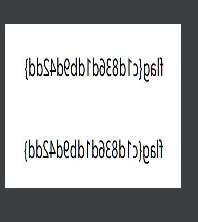

2021年第六届全国网络空间安全技术大赛Misc
2021年第六届全国网络空间安全技术大赛Misc
RGB
一共得到28864行RGB数据，
通过不断尝试分解64 x 11 x 41
from PIL import Image |

水平翻转得到flag{c1d836d1db9d42dd}
zip
压缩包ARCHPR爆破得到密码【ff123】
得到【readme.txt】
培根密码 |
【文章.docx】解密后
全选上色
得到flag{cbfacb9df0c7caf9a2b8a8ffbd72d1a0}
Memory_1
# 查看可能版本 |
观察时间规律，发现曾经打开cmd
然而
volatility -f mal.vmem --profile=Win7SP1x64 cmdscan |
只能看到ipconfig
发现文章https://wiki.wgpsec.org/knowledge/ctf/Volatility.html
尝试查看cmd的详细历史命令
volatility -f mal.vmem --profile=Win7SP1x64 cmdline |
经过多次尝试，确定病毒名为
flag{24060da3d327991115a96e7099da25c3}
Memory_2
看一下用户信息
volatility -f mal.vmem --profile=Win7SP1x64 printkey -K "SAM\Domains\Account\Users\Names" |
在最后发现可疑net1.exe，
flag{45321c07f425d915c55424957353dd07}
Slowloris
1)小白做法为，
统计-》流量图-》遍历所有ip
md5加密
slowloris/195.8.178.227
得到flag
flag{3fc9d4a929cb690728d2b76c76483abe}
2)一般做法为：Slowloris攻击为大流量攻击，通过流量包查看哪两个ip之间有频繁交互即可锁定